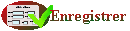

Aide de la fiche client 
Cette fiche présente les informations du client afin de permettre la consultation
ou la modification de ces informations. Par défaut, les dix dernières
prestations sont affichées.
Les données obligatoires sont affichées en lettres droites et les données facultatives
sont en italiques. Ainsi, pour créer un client, uniquement le nom est
obligatoire. Cependant il est vivement conseillé de saisir le plus d'informations
possible afin de pouvoir effectuer des mailings, statistiques, ... Ainsi la
zone commentaire vous permet de garder le "fil" avec votre client
et permet d'alimenter la conversation.
- Pour modifier les informations du client
:
- Saisir ou modifier les informations
- Cliquer sur 
et vérifier que l'enregistrement s'est bien effectué
grâce au message sous le titre.
- Pour consulter tout l'historique du client
:
- Cliquer sur "Toutes les prestations"
- Pour accueillir un client en vue d'une prestation spécifique
:
- Cliquer sur l'icône
 devant la prestation que vous voulez réaliser. Ceci duplique la
facture concernée et la place dans l'encours.
devant la prestation que vous voulez réaliser. Ceci duplique la
facture concernée et la place dans l'encours.
- Pour filtrer l'historique du client par type de
vente :
- Choisir le type de vente qui vous intéresse dans la liste
déroulante à coté de "Prestation"
- Pour créer les historiques du client avant
le démarrage du logiciel :
- Cliquer sur "Nouvel historique"
- La fiche facture affiche une facture
vierge d'historique
- Pour Modifier les informations techniques ou y
ajouter le jugement du client :
- Cliquer sur le commentaire à compléter ou sur l'icône
dans la partie historique
- Saisir le commentaire dans la zone qui apparaît alors
- Valider le commentaire
- Pour imprimer la fiche technique :
- Cliquer sur "Impression fiches"
- La fiche technique affiche les informations
techniques pour les imprimer
- Pour revoir le détail d'une facture du client
:
- Cliquer sur la date de la facture, que vous souhaitez consulter,
parmi les lignes d'historique.
- Pour envoyer un email au client :
- Cliquer sur l'icône
- Remplir le message
- Ne pas oublier de vous connecter à Internet
- Pour supprimer un client :
- Vérifier que le client n'a pas de facture
- Cliquer sur
et vérifier que la suppression s'est bien déroulée
grâce au message sous le titre.
- Pour revenir à la liste des clients et consulter
un autre client :
Voir aussi les trucs et astuces.